東中野店｜写真付きアクセス案内
ご来店の際は、下記の道順をご確認ください。
所在地東京都中野区東中野4-7-18 岡藤ビル305号室
最寄り駅
JR・都営大江戸線 東中野駅から徒歩約3分
東京メトロ東西線 落合駅から徒歩約4分
駅からの写真付き道順をご確認ください。
🚃 東中野駅からのアクセス（徒歩約3分）
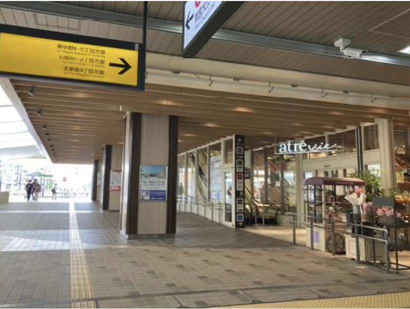
1.JR・都営大江戸線 東中野駅 ▶︎JRをご利用の方 西口出口からアトレ方面に進みロータリーに出ます ▶︎都営大江戸線をご利用の方 A1出口からロータリーに出ます
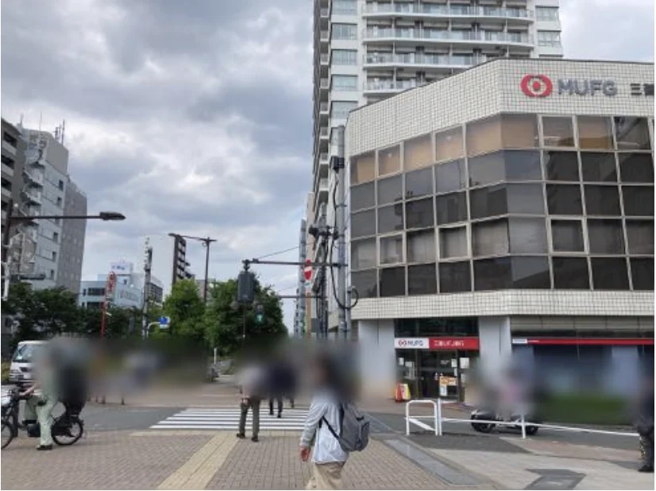
2.ロータリー右手の三菱UFJ銀行側に渡ります
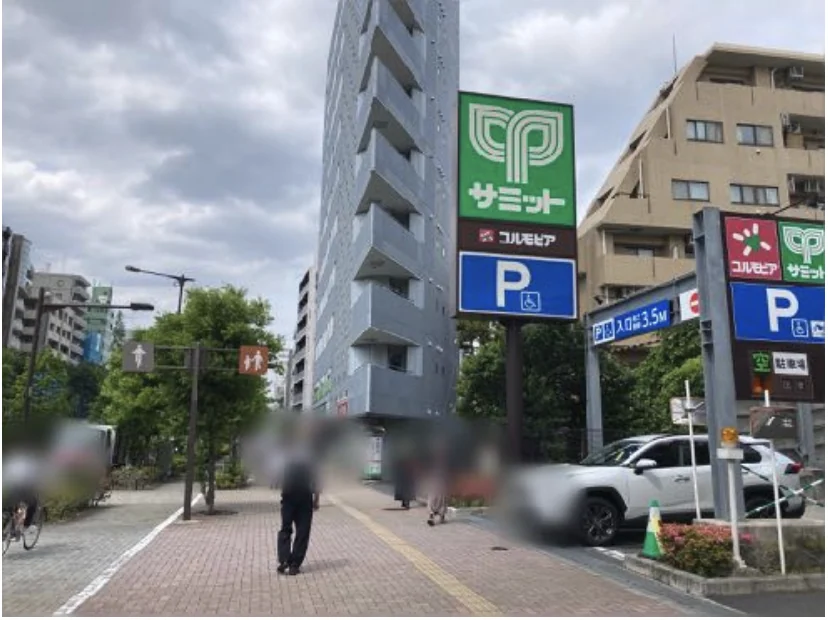
3.道なりに進みサミットを通過します （そのまましばらく直進します）
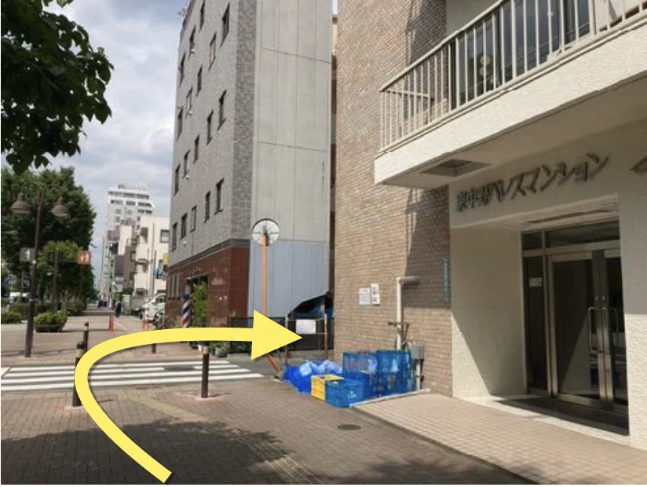
4.東中野パレスマンションの角を右折します
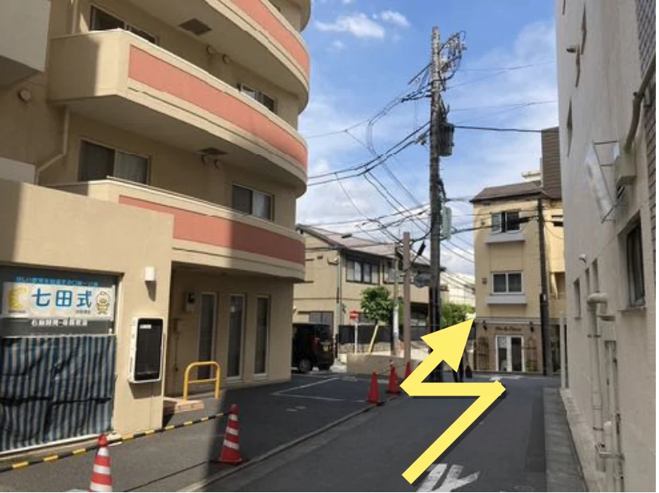
5.つきあたりを左折し右手の坂道を下ります
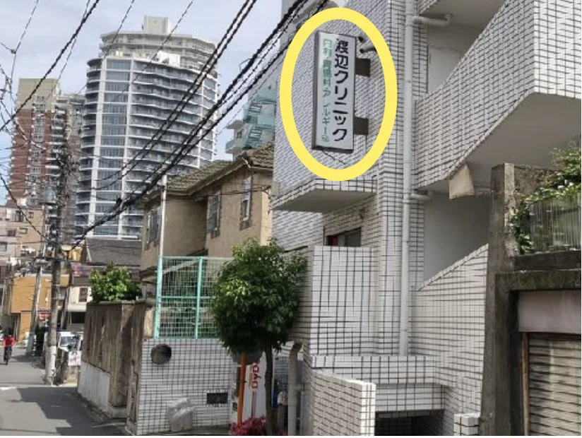
6.通りの右手に白いビルが見えてきます (渡辺クリニックの看板あり) こちらの3Fに当レンタルサロンがございます
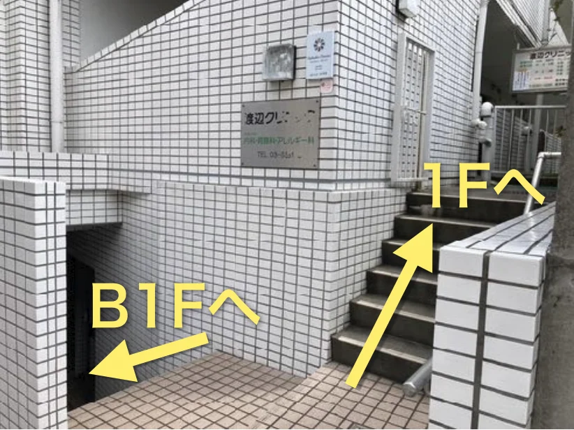
7.階段を上がると1Fの、下がるとB1Fのエレベーター乗り場に着きます
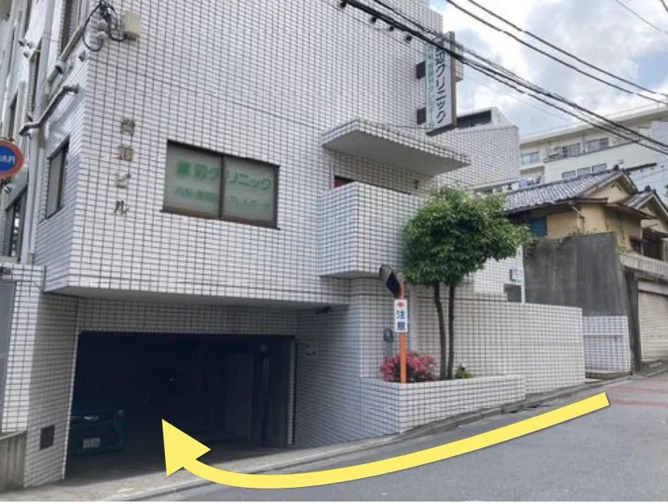
(7.坂を少し下ると当ビル駐車場に繋がるスロープがあり、そこからもB1Fエレベーター乗り場に行くことができます) ※お荷物が多くキャリーケースなどでお越しの際はこちらが良いかもしれません
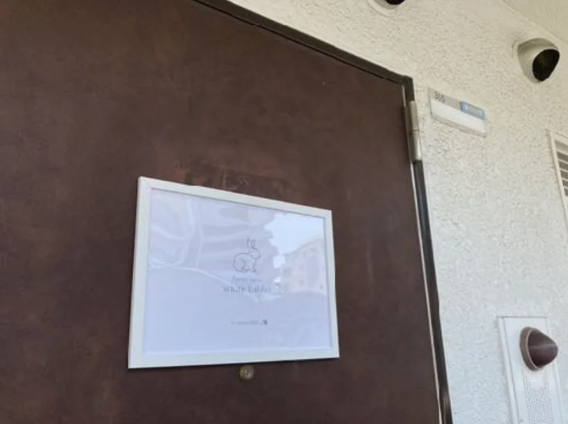
8.エレベーターで3Fに上がり305号室に向かって下さい （white rabbit の看板が玄関ドアにかけてあります）
🚃 落合駅からのアクセス（徒歩約4分）
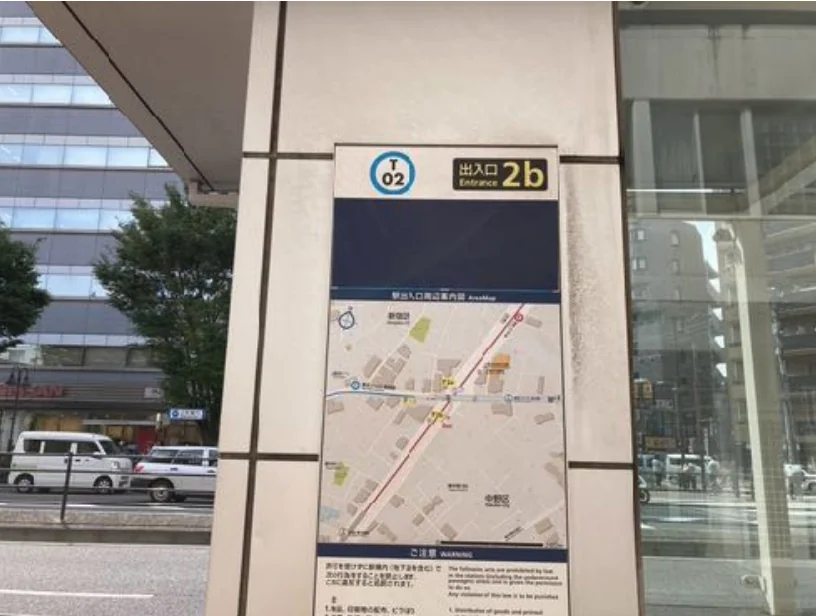
1.落合駅2b出口に出ます
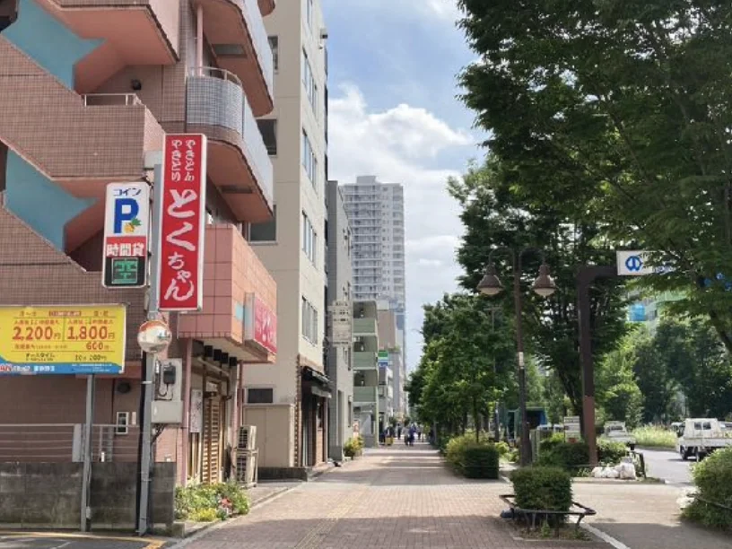
2.左手前方にある赤い看板「とくちゃん」方面に進みます
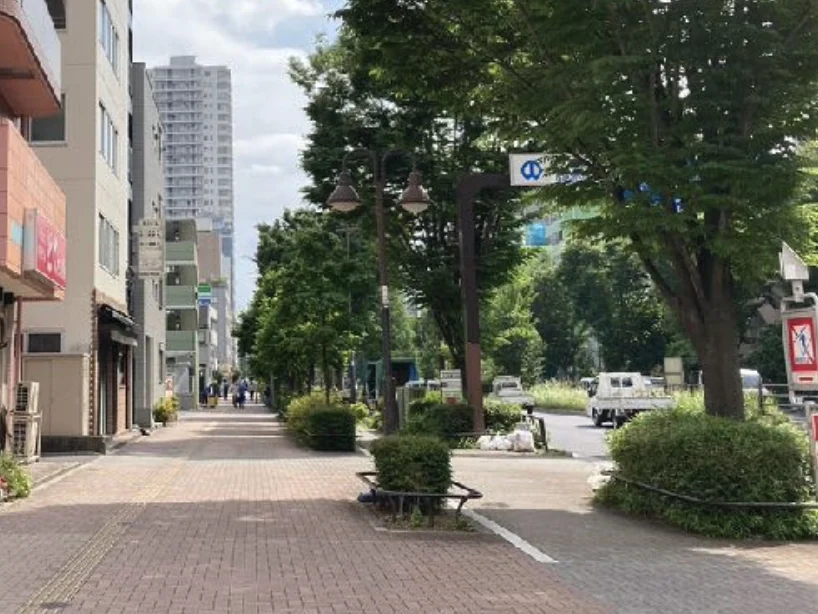
3.しばらく道なりにまっすぐ進みます
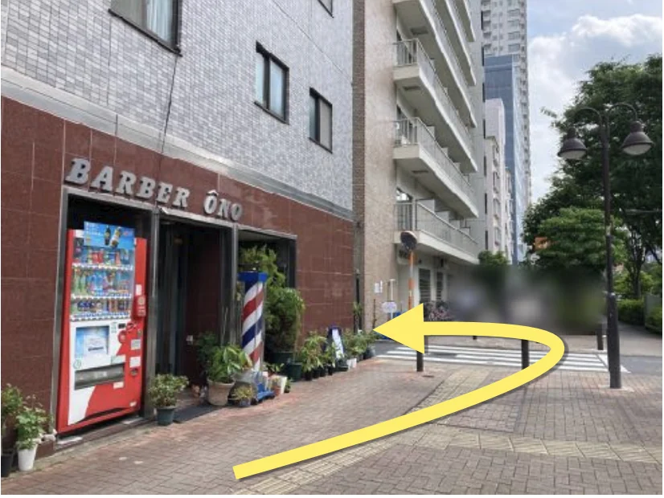
4.通りの左手にある床屋さんの角を左折します
5.つきあたりを左折し右手の坂道を下ります
6.通りの右手に白いビルが見えてきます (渡辺クリニックの看板あり) こちらの3Fに当レンタルサロンがございます
7.階段を上がると1Fの、下がるとB1Fのエレベーター乗り場に着きます
(7.坂を少し下ると当ビル駐車場に繋がるスロープがあり、そこからもB1Fエレベーター乗り場に行くことができます) ※お荷物が多くキャリーケースなどでお越しの際はこちらが良いかもしれません
8.エレベーターで3Fに上がり305号室に向かって下さい （white rabbit の看板が玄関ドアにかけてあります）